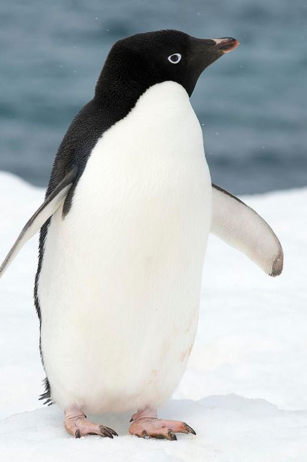
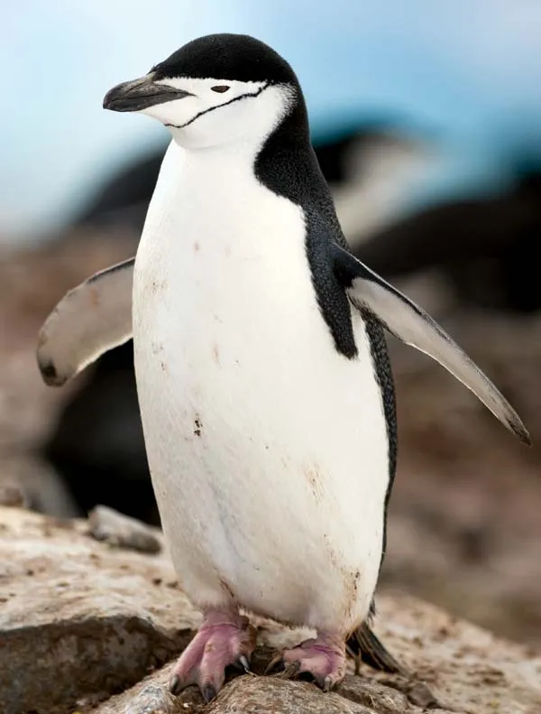

How do the physical characteristics of different penguin species vary across islands in the Palmer Archipelago, Antarctica?
Intended Audience
This analysis is intended for anyone interested in learning more about species diversity and adaptations in Antarctic penguin populations.
Dataset
The data comes from the Palmer Penguins dataset, collected by Dr. Kristen Gorman and the Palmer Station Long Term Ecological Research (LTER) program in Antarctica. (Gorman and Horst, n.d.)
Island in Palmer Archipelago (Biscoe, Dream, Torgersen)
bill_length_mm
Length of penguin bill (mm)
bill_depth_mm
Depth of penguin bill (mm)
flipper_length_mm
Length of penguin flipper (mm)
body_mass_g
Body mass (g)
sex
Sex of the penguin (male, female)
year
Year of observation (2007, 2008, 2009)
Penguin Species
Adelie Penguin
 Description: The Adelie Penguin is known for its distinctive white ring around the eyes and is one of the most common penguin species in Antarctica. Source: Australian Museum (Museum 2023)
Chinstrap Penguin
 Description: Named for the narrow black band under its head, the Chinstrap Penguin is often found on rocky Antarctic islands. Source: Encyclopaedia Britannica (Britannica 2023)
Gentoo Penguin
Description: Recognizable by its bright orange bill and white stripe across the head, the Gentoo Penguin is the fastest underwater swimmer of all penguins. Source: GRID-Arendal (GRID-Arendal 2023)
library(dplyr)
Attaching package: 'dplyr'
The following objects are masked from 'package:stats':
filter, lag
The following objects are masked from 'package:base':
intersect, setdiff, setequal, union
Note: The color palette chosen is designed to be colorblind-friendly, making this visualization accessible to a broader audience.
Bar Plot of Average Body Mass by Species and Island
ggplot(penguins_summary, aes(x = species, y = avg_body_mass, fill = species)) +geom_col(width =0.6, color ="black") +facet_wrap(~ island) +scale_fill_viridis_d(option ="plasma", begin =0.3, end =0.8, name ="Species") +geom_text(aes(label =round(avg_body_mass, 1)), vjust =-2.5, size =4) +ylim(0, 6) +labs(title ="Average Body Mass of Penguin Species by Island",subtitle ="Comparison of Adelie, Chinstrap, and Gentoo Penguins across Islands",x ="Species",y ="Average Body Mass (kg)",caption ="Data Source: Palmer Penguins dataset" ) +theme_minimal(base_size =15) +theme(axis.text.x =element_text(angle =45, hjust =1) )
On Biscoe Island, Gentoo penguins exhibit this higher body mass, while Adelie penguins remain around 3.7 kg. On Dream Island, Adelie and Chinstrap penguins share an average body mass of 3.7 kg, and on Torgersen Island, only Adelie penguins are present, with a consistent average body mass of 3.7 kg.
Scatter Plot of Bill Length vs. Bill Depth with Linear Trend Lines by Species
ggplot(penguins_clean, aes(x = bill_length_mm, y = bill_depth_mm, color = species)) +geom_point(alpha =0.7) +geom_smooth(method ="lm", se =FALSE) +scale_color_viridis_d(option ="viridis", name ="Species") +labs(title ="Bill Length vs. Bill Depth by Species",subtitle ="Linear trend lines added for each species",x ="Bill Length (mm)",y ="Bill Depth (mm)",caption ="Data Source: Palmer Penguins dataset" ) +theme_minimal()
`geom_smooth()` using formula = 'y ~ x'
Each species shows a distinct linear trend line, indicating differences in the relationship between bill length and bill depth for each species. Gentoo penguins (in yellow) generally have longer bills with shallower depths, while Adelie penguins (in dark purple) show shorter bill lengths and greater depths. Chinstrap penguins (in teal) lie between these two species in terms of both bill length and depth, following their own positive trend.
Box Plot of Measurements by Species, Faceted by Measurement Type
ggplot(penguins_long, aes(x = species, y = value, fill = species)) +geom_boxplot() +facet_wrap(~ measurement, scales ="free_y") +scale_fill_viridis_d(option ="viridis", name ="Species") +labs(title ="Distribution of Measurements by Species",subtitle ="Faceted by measurement type",x ="Penguin Species",y ="Values",caption ="Data Source: Palmer Penguins dataset" ) +theme_minimal()
For bill depth, Gentoo penguins have the lowest median, while Adelie penguins have a higher median with a broader spread. In terms of bill length, Adelie penguins have the shortest bills, while Gentoo and Chinstrap penguins have similar, longer bill lengths. For body mass, Gentoo penguins have a notably higher median body mass compared to Adelie and Chinstrap penguins. Lastly, in flipper length, Gentoo penguins again stand out with longer flippers, whereas Adelie penguins have the shortest.
Summary
The analysis revealed distinct physical characteristics among Gentoo, Adelie, and Chinstrap penguins across islands in the Palmer Archipelago. Body Mass: Gentoo penguins consistently exhibit the highest body mass, notably on Biscoe Island (~5 kg), while Adelie penguins maintain a stable average of ~3.7 kg across Biscoe, Dream, and Torgersen Islands. Bill Length and Depth: Gentoo penguins have longer, shallower bills, Adelie penguins have shorter, deeper bills, and Chinstrap penguins show intermediate characteristics. Other Morphological Traits: Box plots highlighted that Gentoo penguins have the longest flippers, heaviest body mass, and shallowest bill depth; Adelie penguins in most cases share similar traits with Chinstrap penguins, with only one exception that Adelie has a significnat shorter bill length than Chinstrap penguins. These findings contribute to our understanding of penguin morphology.
Ecological Significance
These morphological differences likely reflect adaptations to distinct ecological niches among Gentoo, Adelie, and Chinstrap penguins. Gentoo penguins’ greater body mass and longer flippers may enhance their foraging efficiency, especially on Biscoe Island. Variations in bill characteristics suggest dietary specialization, with each species potentially adapted to different prey or feeding techniques. Such physical distinctions emphasize the role of evolutionary adaptations in reducing interspecies competition and highlight potential resilience or vulnerability to environmental changes, offering valuable insights for conservation efforts in the Antarctic ecosystem.